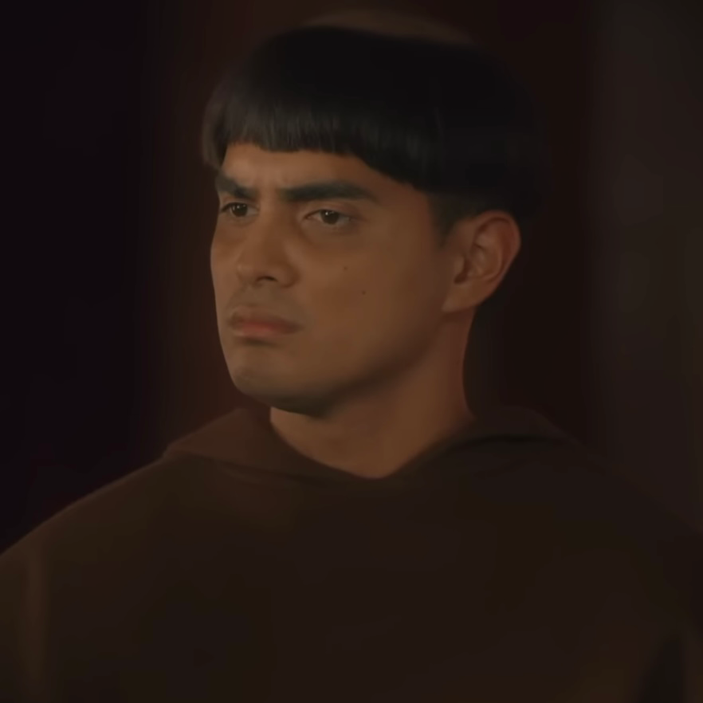
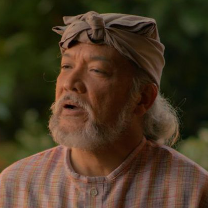
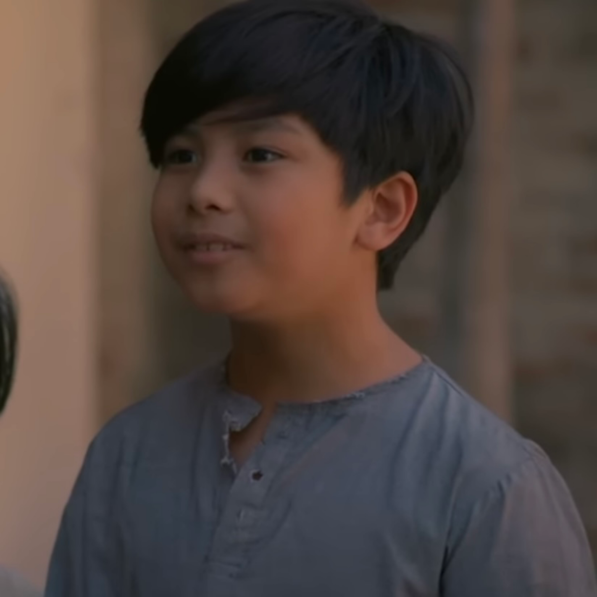

|
Juan Crisostomo Ibarra y Magsalin |
- He is the son of Don Rafael Ibarra
- He sought to educate Filipinos and give them the rights they deserve
|
 |
Maria Clara de los Santos |
- She is the fiancee of Crisostomo Ibarra
- She is the adopted daughter of Kapitan Tiago
|
|
Elias |
- He is a close friend of Crisostomo Ibarra
- He wanted to help those who were persecuted by the Spaniards
|
 |
Kapitan Tiago |
- He is the adoptive father of Maria Clara
- He is a wealthy and powerful businessman, yet he is quite gullible
|
|
Padre Damaso |
- He is the biological father of Maria Clara
- He is one of the main enemies of Crisostomo Ibarra, as he is also an enemy of his father
|
|  |
Padre Salvi |
- He was the priest who replaced Padre Damaso
- He is one of the people who will cause Ibarra's eventual downfall
|
|
Don Rafael Ibarra |
- He is the father of Crisostomo Ibarra
- He was wrongfully accused of commiting a crime, causing him to be jailed
|
|  |
Don Anastacio |
- He is often called "Pilosopo Tasyo" or "Tasiong Baliw"
- He is an intelligent man who was forced to abandon his studies
|
|
Sisa |
- She is the mother of Crispin and Basilio
- She left her comfortable life for the sake of love, as she wanted to be with Pedro
|
|
Crispin |
- He is the younger son of Sisa and Pedro
- He was accused of stealing gold from the church which ultimately led to his demise
|
|  |
Basilio |
- He is the older son of Sisa and Pedro
- He became a medical student to fulfill the dream he had for his brother
|
|
Donya Victorina De Espadaña |
- She is the wife of Don Tiburcio
- She came up with the idea to pair Maria Clara with a relative of her husband
|
 |
Don Tiburcio De Espadaña |
- He is the husband of Donya Victorina
- He is a Spanish quack doctor
|
|
Donya Consolacion |
- She is the wife of the Alperes
- She is a former laundrywoman who became rich when she married the Alperes
|
|
Alperes |
- He is the husband of Donya Consolacion
- He is a strict leader who likes to drink
|
|
Tiya Isabel |
- She is the aunt of Maria Clara who took care of her when she was growing up
- She and Kapitan Tiago partook in making major decisions in Maria Clara's life
|